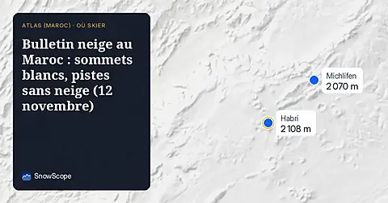
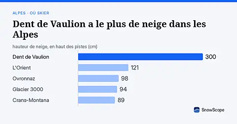
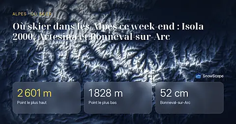
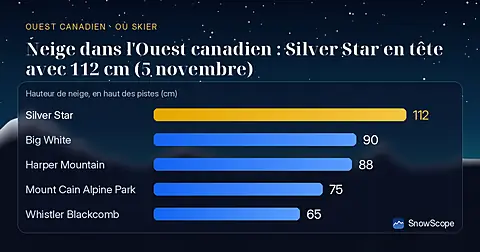

Bulletins neige · Où skier
Des bulletins neige quotidiens pour les skieurs : où est la neige, ce qui arrive et où skier, d'après la carte de neige SnowScope et les stations de mesure. Chaque chiffre vient des données du jour.

SnowScope classe Whistler Blackcomb premier dans l'Ouest canadien aujourd'hui, avec environ 153 cm sur le haut du domaine, devant Big White …

Cauterets Cirque du Lys domine les Pyrénées avec 24 cm au sommet le 22 novembre. Les chutes de neige prévues le 25 novembre pousseront la couverture de 44 à 51 stations.

La Grave affiche 171 cm en versants supérieurs aujourd'hui, soit 68 % de la normale pour fin novembre. Les Alpes ont enregistré des gains importants ce week-end.

Gavarnie-Gèdre domine les Pyrénées avec 26 cm en altitude le 22 novembre. La couverture neigeuse a triplé en deux jours dans la région.

150 cm en haut du domaine : voilà pourquoi Whistler Blackcomb est en tête de notre liste. La neige au sol, la neige des 72 dernières heures, la neige …

Pas de neige sur les pistes de l'Atlas aujourd'hui. La neige n'est que sur les hauts sommets : environ 0 km² en tout, avec 1 cm au point le plus …

Pluie au-dessus de 2 980 m à Gavarnie-Gèdre aujourd'hui, mais la neige revient dans quatre jours. Comment s'habiller et quoi apporter face aux conditions changeantes des Pyrénées.

Bulletin neige Alpes, 21 novembre : Alpe d'Huez accumule 92 cm sur les pentes supérieures. Orelle domine la région avec 136 cm. De la neige fraîche attendue d'ici mardi.

Les Arcs en tête avec 166 cm en altitude. La neige tombe jusqu'à dimanche. Les meilleures pistes sont en altitude et exposées au nord. Données du 20 novembre.

Les neiges de début de saison dans les Alpes dépassent de 38 % la moyenne des 46 dernières années. Les pentes intermédiaires de La Plagne accumulent 36 cm de plus que d'habitude à cette date, avec de fortes chutes prévues jusqu'à dimanche.

Whistler Blackcomb affiche le plus de neige en Occident canadien ce fin de semaine avec 136 cm en altitude. Le manteau neigeux de début de saison est mince aux altitudes moyennes dans toute la région, mesuré le 2026-11-19.

La surface enneigée a bondi de 560 à 1 710 km² entre le 17 et le 19 novembre. Piau-Engaly conserve la plus grande épaisseur de neige avec 15 cm en altitude le 19 novembre.

Mount Washington Alpine Resort, bulletin neige : 104 cm tout en haut (Ouest canadien, 18 novembre). À 1 456 m à Whistler Blackcomb, la saison est en …

Bulletin neige Alpes 18 novembre : Orelle en tête avec 111 cm de neige en haut des pentes. Les prévisions du week-end annoncent 100+ cm de neige fraîche dans les grandes stations.

Aujourd'hui, la neige la plus épaisse dans les Alpes est à La Grave (France), environ 97 cm sur le haut du domaine. Orelle suit avec 81 cm, et Les …

Y a-t-il de la neige dans l'Atlas aujourd'hui ? Il n'y a pas de neige sur les pistes de l'Atlas aujourd'hui. La neige n'est stockée que sur les plus …

La zone blanche sur la carte est passée de 258 160 km² (13 novembre) à 253 880 km² aujourd'hui, et la prévision dit 298 900 km² le 18 novembre. Trois …

À Big White le 15 novembre, les pentes supérieures retiennent 68 cm près du sommet tandis que la base reste dégagée ; un gradient vertical extrême typique du début de saison.

Pluie prévue alors que le niveau de congélation monte à 4 080 m ; la neige mesurée le 15 novembre est fine (moins de 20 cm) dans toutes les grandes stations des Pyrénées.

Bulletin neige dans les Alpes, 14 novembre. Pour trouver le plus de neige dans les Alpes aujourd'hui, regardez Saint-Luc (Suisse) : environ 110 cm en …

Lisez la neige du jour dans les Pyrénées et vous obtenez poudreuse fraîche, neige fine de début de saison et de l'air doux qui peut laisser une …

Les stations de ski de l'Atlas ne gardent pas de neige sur leurs pentes aujourd'hui. La neige n'est stockée que sur les plus hauts sommets : environ …

Nos choix sont La Grave, Pfelders et Les Deux Alpes : nous avons regardé la hauteur de neige du jour, la neige fraîche des 72 dernières heures et la …

Whistler Blackcomb, 116 cm de neige : la hauteur du jour en haut du domaine (12 novembre). 162 cm : c'est la neige en haut du domaine de Mount …

Bulletin neige dans l'Atlas (Maroc), 12 novembre. Stations de l'Atlas aujourd'hui : pas de neige sur les pentes. De la neige seulement sur les plus …

À 1 308 m à Dent de Vaulion, les 0 cm du jour dépassent ce que cette date a donné lors de 34 des 46 hivers passés (habituel : 0 cm) : une bonne …

Les pentes hautes de Dent de Vaulion font face à la pluie avec le niveau de congélation atteignant 2 800 m jeudi ; les stations d'altitude reçoivent de la neige fraîche pour le week-end.

Depuis le 9 novembre, la neige est passée de 40 km² à 20 km² aujourd'hui ; pour le 14 novembre, notre prévision donne 10 km². Aujourd'hui, les pistes …
Nous avons pesé la neige déjà au sol, la neige fraîche des 72 dernières heures et ce qu'ajoute la prévision, et retenu Whistler Blackcomb, Tweedsmuir …


Bonneval-sur-Arc affiche 52 cm en altitude le 8 novembre. Les semaines 10-11 correspondent à la pointe de la saison neigeuse. Découvrez ce qu'il faut emporter selon les prévisions.

Mount Washington retient 145 cm le 8 novembre, le plus profond de l'Ouest canadien, mais le niveau de congélation montera au-dessus du sommet d'ici le 11 novembre.

50 cm en haut du domaine : voilà pourquoi La Grave est en tête de notre liste. Nous avons combiné la hauteur de neige du jour, la neige fraîche des …


Oukaimden (Maroc) a la neige la plus épaisse dans l'Atlas (Maroc) aujourd'hui, avec environ 1 cm sur le haut du domaine. Suivent Habri avec 0 cm, …

Nous avons combiné la hauteur de neige du jour, la neige fraîche des 72 dernières heures et la prévision pour retenir Isola 2000, Artesina et …

Bonneval-sur-Arc (France) a la neige la plus épaisse dans les Alpes aujourd'hui, avec environ 52 cm sur le haut du domaine. Suivent La Grave avec …

Les stations de ski de l'Atlas n'ont pas de neige sur leurs pentes aujourd'hui. SnowScope n'en trouve que sur les plus hauts sommets : …

C'est à Silver Star qu'il y a le plus de neige dans l'Ouest canadien : environ 112 cm sur le haut du domaine. Viennent …

Les hauteurs de neige en Alpes sont en retrait par rapport à la normale en début novembre, avec seulement 55 cm dans les meilleures stations au 3 novembre.
C'est à Big White qu'il y a le plus de neige dans l'Ouest canadien : environ 91 cm sur le haut du domaine. Viennent …

La neige au 3 novembre 2026 : Kendall Mountain 53 in (134 cm) après une tempête, Big White 91 cm, les Alpes jusqu'à 55 cm à Bonneval-sur-Arc.